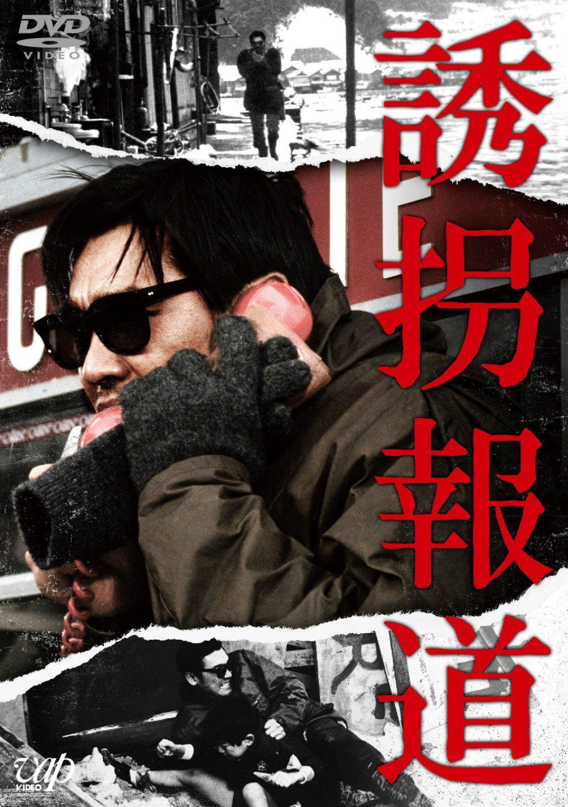

字幕仅供个人兴趣学习，不得商业化和付费。如有其他字幕翻译是基于我提供的字幕，敬请标明出处。
Note:
Subtitles are only for personal use, no commercialized purpose or distribution for money. If you want to share them, please include proper ciation(s) to my site. If you want to translate to other languages based on the subtitles I provide, please cite the source in your subtitle. Thanks.

诱拐报道/誘拐報道 (Yukai Hodo/To Trap a Kidnapper) 是1982年伊藤俊也监督，松田宽夫剧本，菊池俊辅音乐，萩原健一 / 小柳留美子 / 秋吉久美子主演的电影，改编自1980年宝冢市学童诱拐事件(基于读卖新闻大阪总部社会事务科编辑的同名纪录片)。中文字幕由coralsundy根据现有的英文字幕翻译而成，同时采用日文字幕校对。适用于02:14:22的版本。由于译者本人对日语不够精通，校对难免错漏，敬请谅解。
Yukai Hodo / To Trap a Kidnapper (1982) is a 1982 movie directed by Shunya Ito, based on a 1980 true kidnapping case happened in Takarazuka, Japan, with notable stars Kenichi Hagiwara, Rumiko Koyanagi, and Rumiko Koyanagi.
字幕/校对: coralsundy (coralsundy@gmail.com)
审核/调整: coralsundy (coralsundy@gmail.com)
(中字由coralsundy根据英字翻译，日字校对，仅供学习)
中文字幕: Yukai.Hodo.aka.To.Trap.a.Kidnapper.1982.chs.02-14-22.BYcoralsundy.rev1.srt
The Chinese movie subtitle is based on the English subtitle found online, with tweaks and improvements based on the Japanese subtitle.
English Subtitle: Yukai.Hodo.aka.To.Trap.a.Kidnapper.1982.eng.srt
If contacted by the owner of the English subtitle, I will take it off my site.
SUBHD: https://subhd.tv/a/541519
IMDB: https://www.imdb.com/title/tt0128766/
DOUBAN: https://movie.douban.com/subject/2222683/
More Movie Subtitles on My Website: CLICK HERE
诱拐报道 / 誘拐報道 / Yukai Hodo aka To Trap a Kidnapper 1982 Subtitle (Chinese/English) is published on 2022-10-08.